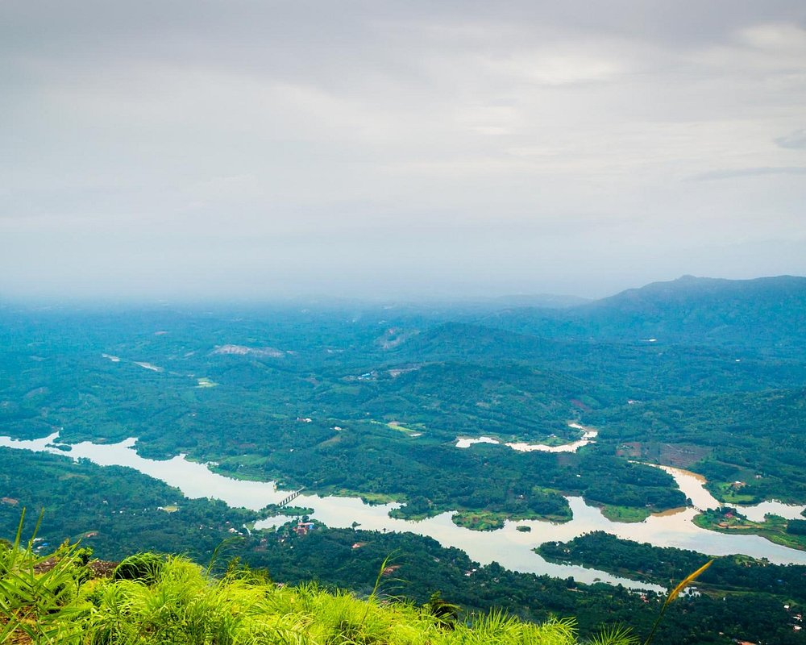
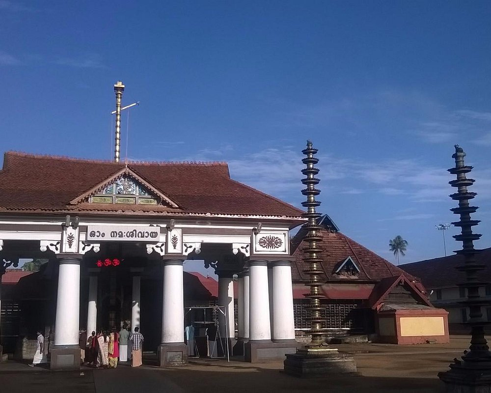

An amazing tourist spot in Kottayam district. A small trek leads to the top, from where the view is just awesome. The view of the monolith is the main attraction here.

Situated at around 6000 MSL, this peak offers awesome views of the Malanakra Dam Catchment area. One of the best treks in Kottayam that offers Jeep safaris and nature trails and treks to the view point.

The Vaikom Mahadeva Temple is a temple for the Hindu god Shiva in Vaikom, Kerala. The temple, along with Ettumanoor Siva Temple, Kaduthuruthy Thaliyil Mahadeva Temple is considered a powerful trisome.